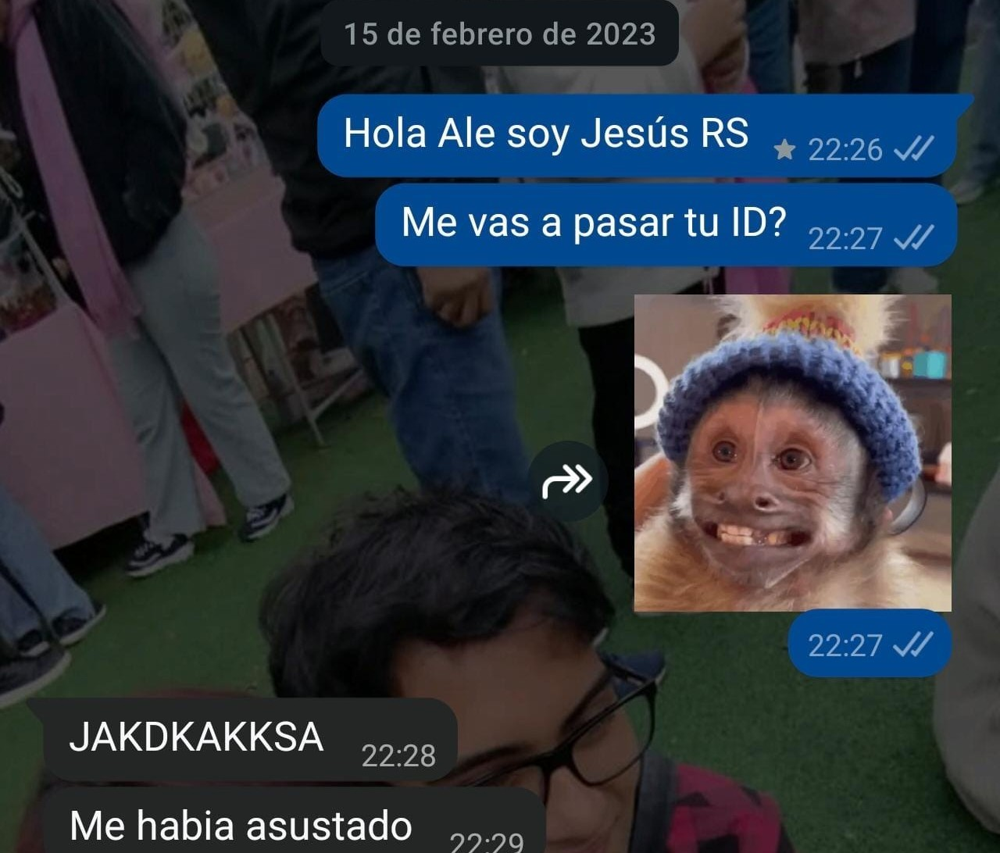

El día que te vi por primera vez
Enkekes nos presentó por primera vez. Los tres éramos RS en Plaza Vea, pero hasta ese momento nunca habíamos compartido turno juntos.
Enkekes nos presentó y me dijo: "Oye, te quiero presentar a alguien, ella es la RS que te dije".
Cuando te vi pensé inmediatamente: "Wao, qué chica tan linda".
Pero entonces vi que debajo de tu chaleco de trabajo tenías un polo de Shingeki no Kyojin. Y obviamente, como buen otaku, no podía simplemente ignorarlo JAJAJA.
Te dije el nombre en japonés y tú inmediatamente supiste que yo también veía anime. Básicamente me delaté solito XD.
Tiempo después me contaste que yo no te había atraído a primera vista, pero sí te había dejado pensando en mí.
Y pensar que todo comenzó con un polo de anime... ♡